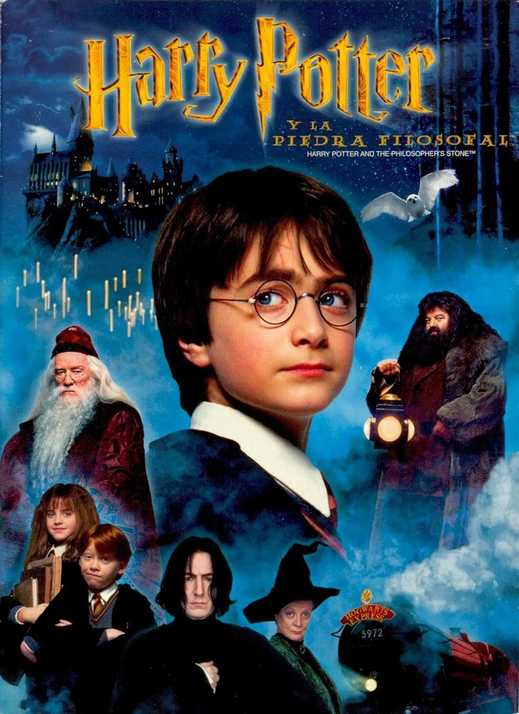
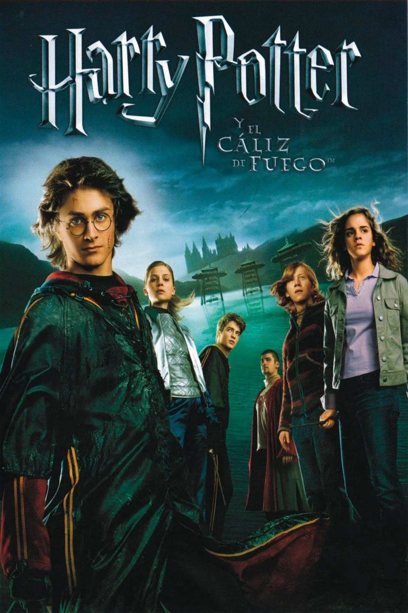

Harry Potter y la piedra filosofal (2001)

Al cumplir once años, Harry Potter se entera de que posee poderes mágicos y es invitado a estudiar en el Colegio Hogwarts de Magia y Hechicería. Allí deja atrás su infeliz infancia con sus tíos, aprende a dominar sus habilidades y forja una inquebrantable amistad con Ron Weasley y Hermione Granger. Sin embargo, su nuevo y maravilloso mundo se vuelve cada vez más peligroso a medida que avanza su adolescencia; Harry descubre que está ligado por una profecía a Lord Voldemort, el temible asesino de sus padres que busca recuperar su forma física y el control absoluto del mundo mágico. A lo largo de sus años escolares, el trío de amigos debe madurar rápidamente, descifrar misterios oscuros y enfrentar desde criaturas letales hasta la corrupción del Ministerio de Magia, culminando en una guerra total en Hogwarts donde Harry deberá realizar el sacrificio definitivo para destruir los Horrocruxes de Voldemort y terminar con su reinado de terror para siempre.






.jpg)
El "niño que vivió", reconocido por su cicatriz en forma de rayo y su gran valentía.
.jpg)
La bruja más brillante de su generación, indispensable por su lógica e inteligencia.
.jpg)
El mejor amigo de Harry, conocido por su lealtad incondicional y valor.